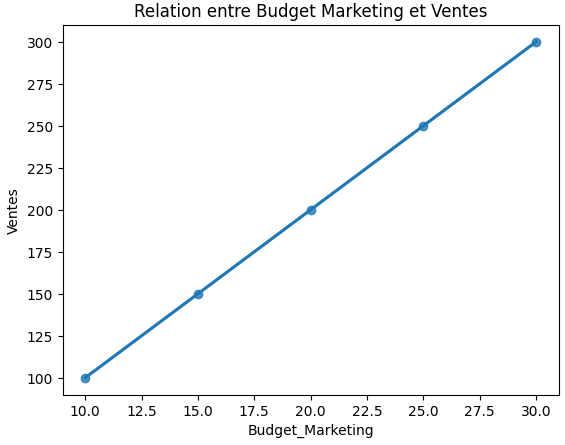
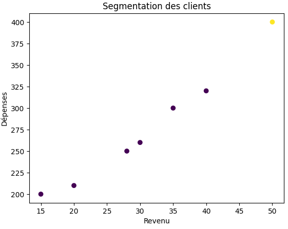
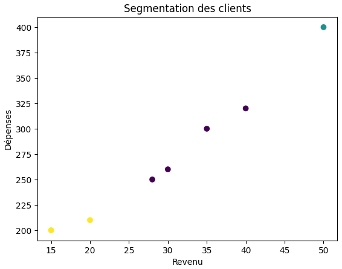
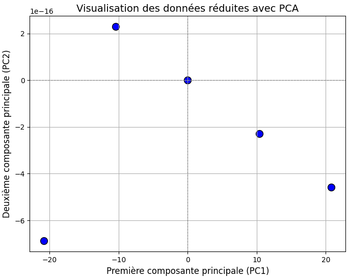

Analyse de données avancée pour le reporting
Introduire les concepts d'analyse de données avancée adaptés au reporting, Comprendre et implémenter des algorithmes tels que K-Means, PCA, ou régressions pour extraire des insights pertinents.
- Régression linéaire pour le reporting
- Prévision des ventes,
- analyse des performances marketing,
- identification de relations entre des variables.
- Clustering avec K-Means
- segmentation des clients (marketing),
- groupement de produits similaires pour optimiser l’inventaire,
- identification des zones géographiques pour la livraison.
- Réduction de dimensions avec ACP(analyse en composant principal) ou PCA (Principal Component Analysis)
- visualisation des données à haute dimension,
- simplification des modèles prédictifs,
- détection d’anomalies.
La régression linéaire est un modèle statistique qui prédit une variable continue en fonction d’une ou plusieurs variables indépendantes.
Applications pratiques :
from sklearn.linear_model import LinearRegression
import pandas as pd
import seaborn as sns
import matplotlib.pyplot as plt
# Exemple de données simulées
data = {'Budget_Marketing': [10, 15, 20, 25, 30],
'Ventes': [100, 150, 200, 250, 300]}
df = pd.DataFrame(data)
# Modèle de régression linéaire
model = LinearRegression()
model.fit(df[['Budget_Marketing']], df['Ventes'])
# Relation entre budget et ventes
sns.regplot(x="Budget_Marketing", y="Ventes", data=df)
plt.title("Relation entre Budget Marketing et Ventes")
plt.show()
# Prédictions
new_budget = pd.DataFrame({'Budget_Marketing': [35]})
predictions = model.predict(new_budget)
print("Prévision pour un budget marketing de 35 :", predictions[0])

Le clustering est une technique qui regroupe des données similaires dans des "clusters". L’algorithme K-Means divise les données en K groupes en minimisant la distance entre les points d’un cluster et son centre.
Applications pratiques :
import pandas as pd
import matplotlib.pyplot as plt
from sklearn.cluster import KMeans
# Exemple de données
data = {'Revenu': [15, 20, 28, 30, 35, 40, 50],
'Dépenses': [200, 210, 250, 260, 300, 320, 400]}
df = pd.DataFrame(data)
# Application de K-Means
kmeans = KMeans(n_clusters=2, random_state=42)
df['Cluster'] = kmeans.fit_predict(df[['Revenu', 'Dépenses']])
# Visualisation
plt.scatter(df['Revenu'], df['Dépenses'], c=df['Cluster'], cmap='viridis')
plt.xlabel('Revenu')
plt.ylabel('Dépenses')
plt.title('Segmentation des clients')
plt.show()


PCA est une méthode de réduction de dimensions qui transforme des données complexes en un espace plus simple tout en préservant leur variance. Elle est utile pour visualiser des données ou réduire le bruit.
Applications pratiques :
import pandas as pd
import matplotlib.pyplot as plt
from sklearn.decomposition import PCA
# Exemple de données simulées
data = {'Feature_1': [2, 4, 6, 8, 10],
'Feature_2': [1, 3, 5, 7, 9],
'Feature_3': [10, 20, 30, 40, 50]}
df = pd.DataFrame(data)
# Application de PCA pour réduire à 2 dimensions
pca = PCA(n_components=2)
reduced_data = pca.fit_transform(df)
print("Données réduites :")
print(reduced_data)
